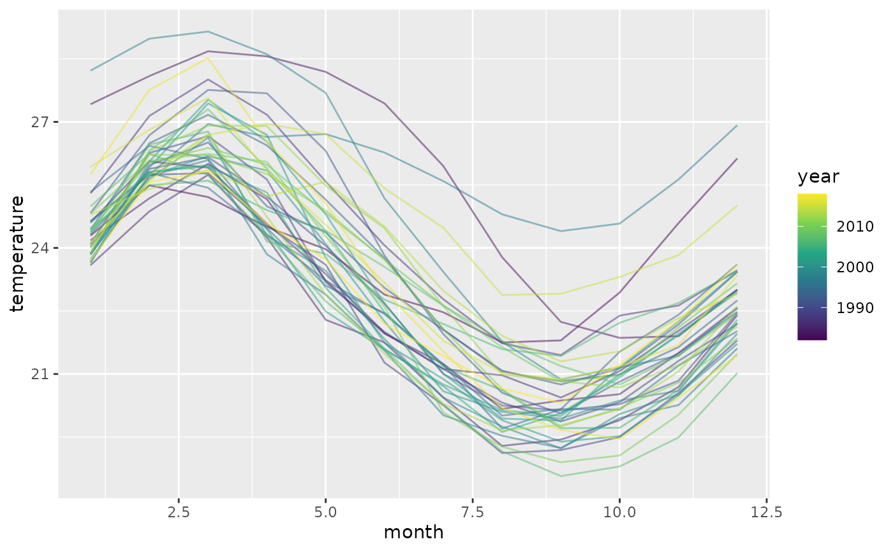

Monthly sea surface temperature measurements from El Niño regions 1 and 2 (OISST) spanning 1982-2018. The data captures the characteristic seasonal patterns and inter-annual variability associated with El Niño Southern Oscillation (ENSO) events.
Format
A tsibble with 444 rows and 3 columns:
- year
Integer year from 1982 to 2018
- month
Integer month from 1 to 12
- temperature
Sea surface temperature in degrees Celsius
Source
Data originally from rainbow::ElNino_OISST_region_1and2.
OISST (Optimally Interpolated Sea Surface Temperature) data from NOAA.
Details
The dataset is structured as a tsibble with year as the index and month as the key variable. This format is ideal for functional forecasting where seasonal patterns (monthly temperature curves) evolve over years.
El Niño regions 1 and 2 are located in the eastern tropical Pacific Ocean and are critical for monitoring ENSO events. Temperature anomalies in these regions are strong predictors of global climate patterns.
References
Hyndman, R.J. and Shang, H.L. (2010) Rainbow plots, bagplots, and boxplots for functional data. Journal of Computational and Graphical Statistics, 19(1), 29-45.
Examples
data(elnino_sst)
head(elnino_sst)
#> # A tsibble: 6 x 3 [1Y]
#> # Key: month [1]
#> year month temperature
#> <int> <int> <dbl>
#> 1 1982 1 24.3
#> 2 1983 1 27.4
#> 3 1984 1 24.2
#> 4 1985 1 23.6
#> 5 1986 1 24.6
#> 6 1987 1 25.3
# View seasonal patterns
library(ggplot2)
ggplot(elnino_sst, aes(x = month, y = temperature, group = year, color = year)) +
geom_line(alpha = 0.5) +
scale_color_viridis_c()
